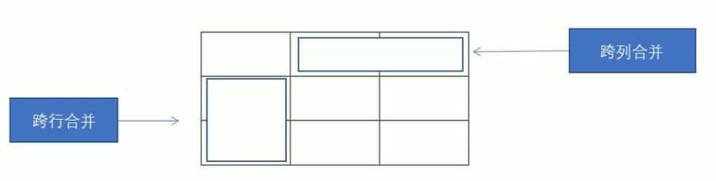
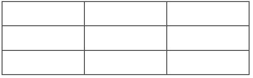
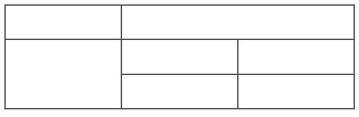
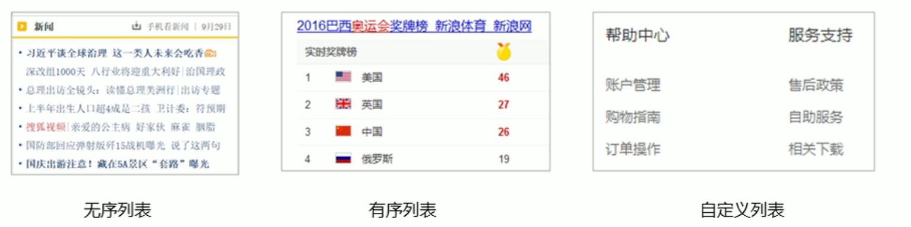
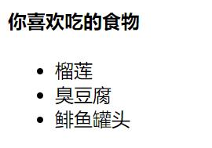
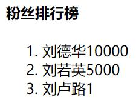
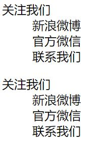
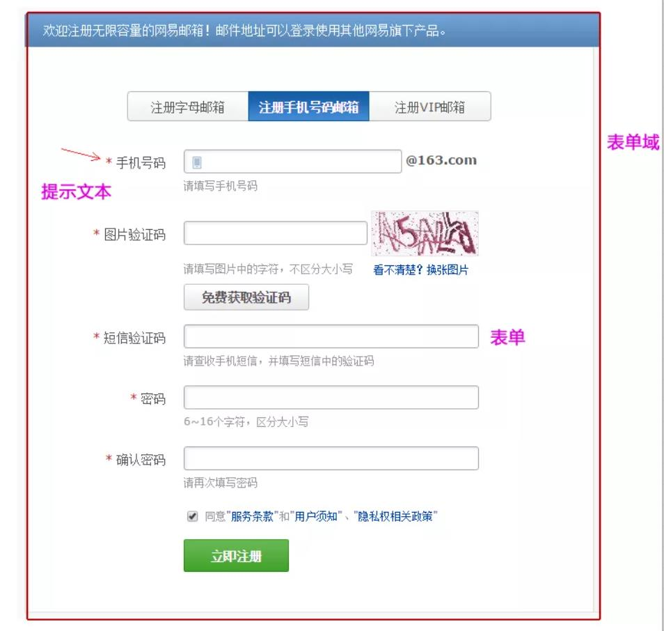
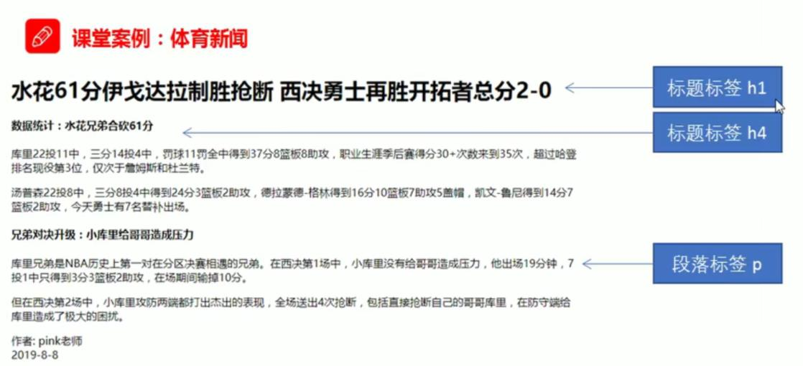
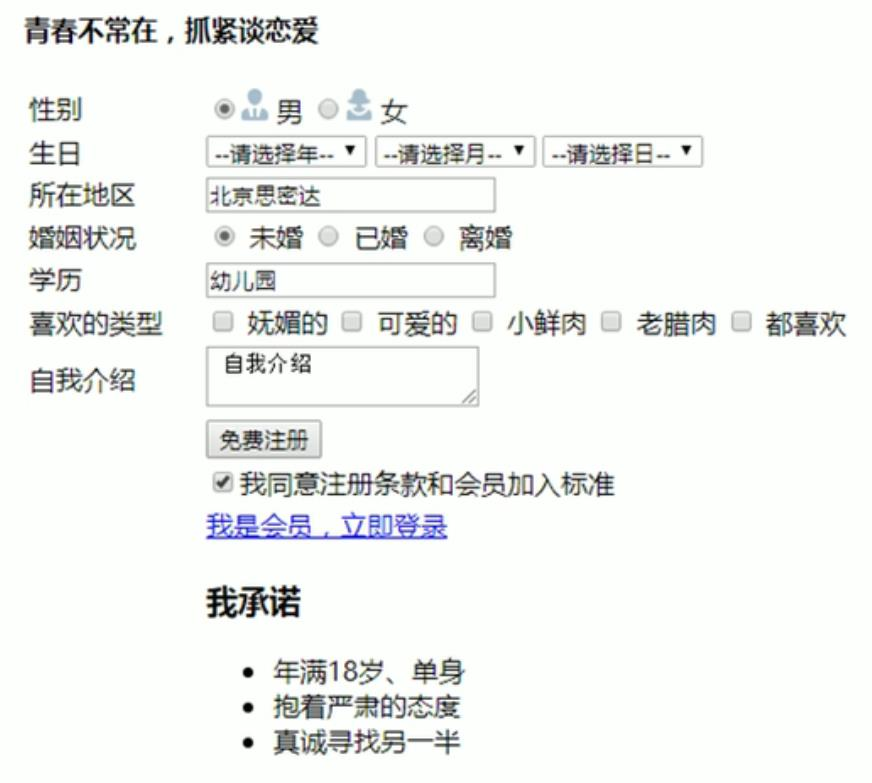

4 HTML常用标签
4.1 语义标签
学习标签是有技巧的，重点是记住每个标签的语义。简单理解就是指标签的含义，即这个标签是用来干嘛的。根据标签的语义，在合适的地方给一个最为合理的标签，可以让页面结构更清晰。图3.1: 语义标签
4.2 标题标签
为了使网页更具有语义化，我们经常会在页面中用到标题标签。HTML提供了6个等级的网页标题，即<h1> - <h6>。
<h1>我是一级标题</h1>h单词head 的缩写，意为头部、标题。
标签语义：作为标题使用，并且依据重要性递减。
特点：
- 加了标题的文字会变的加粗，字号也会依次变大。
- 一个标题独占一行。
<h1>标题一共六级选，</h1>
<h2>文字加粗一行显。</h2>
<h3>由大到小依次减，</h3>
<h4>从重到轻随之变。</h4>
<h5>语法规范书写后，</h5>
<h6>具体效果刷新见。</h6>4.3 段落标签
在网页中，要把文字有条理地显示出来，就需要将这些文字分段显示。在HTML标签中，<p>标签用于定义段落，它可以将整个网页分为若干个段落。
<p>我是一个段落标签</p>p是单词paragraph的缩写，意为段落。标签语义：可以把HTML文档分割为若干段落。
特点∶
- 文本在一个段落中会根据浏览器窗口的大小自动换行。
- 段落和段落之间保有空隙。
4.4 换行标签
在HTML中，一个段落中的文字会从左到右依次排列，直到浏览器窗口的右端，然后才自动换行。如果希望某段文本强制换行显示，就需要使用换行标签<br />。
<br />br是单词break的缩写，意为打断、换行。标签语义∶强制换行。
特点︰
<br />是个单标签。<br />标签只是简单地开始新的一行，跟段落不一样，段落之间会插入一些垂直的间距。
4.5 文本格式化标签
在网页中，有时需要为文字设置粗体、斜体或下划线等效果，这时就需要用到HTML中的文本格式化标签，使文字以特殊的方式显示。 标签语义：突出重要性,比普通文字更重要.
| 语义 | 标签 | 单词 | 实例 | 说明 |
|---|---|---|---|---|
| 加粗 | <strong></strong>或者<b></b> |
strong | 加粗 | 更推荐使用<strong>标签加粗语义更强烈 |
| 倾斜 | <em></em>或者<i></i> |
emphasize | 斜体 | 更推荐使用<em>标签加粗语义更强烈 |
| 删除线 | <del></del>或者<s></s> |
delete | 更推荐使用<del>标签加粗语义更强烈 |
|
| 下划线 | <ins></ins>或者<u></u> |
inserted | 下划线 | 更推荐使用<ins>标签加粗语义更强烈 |
4.6 布局标签
<div>和<span>是没有语义的，它们就是一个盒子，用来装内容的。
<div>这是头部</div>
<span>今日价格</span>div是division的缩写，表示分割、分区。span意为跨度、跨距。
特点∶
<div>标签用来布局，但是现在一行只能放一个<div>。大盒子<span>标签用来布局，一行上可以多个<span>。小盒子
4.7 图像标签和路径
4.7.1 图像标签
在HTML标签中，<img>标签用于定义HTML页面中的图像。
<img src="图像URL”/>img单词image的缩写，意为图像。
src是标签的必须属性，是单词source的缩写。它用于指定图像文件的路径和文件名。
所谓属性︰简单理解就是属于这个图像标签的特性。
| 属性 | 属性值 | 单词 | 说明 |
|---|---|---|---|
| src | 图片路径 | source | 必须属性 |
| alt | 文本 | alternate | 替换文本，图像不能显示的文字 |
| title | 文本 | title | 提示文本。鼠标放到图像上，显示的文字 |
| width | 像素 | width | 设置图像的宽度 |
| heigth | 像素 | heigth | 设置图像的高度 |
| border | 像素 | border | 设置图像的边框粗细 |
图像标签属性注意点∶
- 图像标签可以拥有多个属性，必须写在标签名的后面。
- 属性之间不分先后顺序，标签名与属性、属性与属性之间均以空格分
- 属性采取键值对的格式，即key= “value”的格式，属性=“属性值”
重点掌握点:
- 请说出图像标签哪个属性是必须要写的?
- 请说出图像标签中alt和title属性区别?
4.7.2 路径
实际工作中，我们的文件不能随便乱放，否则用起来很难快速的找到他们，因此我们需要一个文件夹来管理他们。
目录文件夹：就是普通文件夹，里面只不过存放了我们做页面所需要的相关素材，比如html文件、图片等。
根目录：打开目录文件夹的第一层就是根目录.
VSCode打开目录文件夹：文件→打开文件→选择目录文件夹，后期方便管理文件
页面中的图片会非常多，通常我们会新建一个文件夹来存放这些图像文件( images )，这时再查找图像，就需要采用“路径”的方式来指定图像文件的位置。
路径可以分为︰
- 相对路径
- 绝对路径
相对路径：以引用文件所在位置为参考基础，而建立出的目录路径。这里简单来说，图片相对于HTML页面的位置。
| 相对路径分类 | 符号 | 说明 | 例子 |
|---|---|---|---|
| 同一级路径 | 图像文件位于HTML文件同一级 | <img src="baidu.gif" /> |
|
| 下一级路劲 | / | 图像文件位于HTML文件下一级 | <img src="images/baidu.gif" /> |
| 上一级路径 | ../ | 图像文件位于HTML文件上一级如 | <img src="../baidu.gif" /> |
以此类推，上上一级路径就是 <img src="../../baidu.gif" />
相对路径是从代码所在的这个文件出发，去寻找目标文件的，而我们这里所说的上一级、下一级和同一级就是图片相对于HTML页面的位置。
绝对路径︰是指目录下的绝对位置，直接到达目标位置，通常是从盘符开始的路径。
例如，“D:\web\imglogo.gif”或完整的网络地址“http://www.itcast.cn/images/logo.gif”。
4.8 超链接
在HTML标签中，<a>标签用于定义超链接，作用是从一个页面连接到另一个页面。
4.8.1 链接的语法格式
<a href="跳转目标" target="目标窗口的弹出方式">文本或图像</a>a是单词anchor的缩写，意为∶锚。
两个属性的作用如下:
| 属性 | 作用 |
|---|---|
| href | 用于指定链接目标的url地址，是必须属性,当为标签应用href属性时，它就具有了超链接的功能 |
| target | 用于指定链接页面的打开方式，其中_self为默认值，_blank为在新窗口中打开方式。 |
注：href是Hypertext REFerence，超文本参考的缩写
4.8.2 链接的分类
- 外部链接：例如
<a href="http://www.qq.com" target="_blank">腾讯</a> - 内部链接：例如
<a href="index.html" target="_self">首页</a> - 空链接：如果当时没有确定链接目标时，如
<a href="#">首页</a > - 下载链接：如果href里面地址是一个文件或者压缩包，会下载这个文件。
- 网页元素链接：在网页中的各种网页元素，如文本、图像、表格、音频、视频等都可以添加超链接.
- 锚点链接:点我们点击链接,可以快速定位到页面中的某个位置.
- 在链接文本的href属性中，设置属性值为#名字的形式，如
<a href="#two">第2集</a> - 找到目标位置标签，里面添加一个id属性=刚才的名字，如:
<h3 id="two">第2集介绍</h3>
- 在链接文本的href属性中，设置属性值为#名字的形式，如
src 和 href 的区别
一句话概括:src 是引入资源的 href 是跳转url的
- src用于替换当前元素，href用于在当前文档和引用资源之间确立联系。
- src是source的缩写，指向外部资源的位置，指向的内容将会嵌入到文档中当前标签所在位置；在请求src资源时会将其指向的资源下载并应用到文档内，例如js脚本，img图片和frame等元素。当浏览器解析到该元素时，会暂停其他资源的下载和处理，直到将该资源加载、编译、执行完毕，图片和框架等元素也如此，类似于将所指向资源嵌入当前标签内。这也是为什么将js脚本放在底部而不是头部。
- href是Hypertext Reference的缩写，指向网络资源所在位置，建立和当前元素（锚点）或当前文档（链接）之间的链接。如果我们在文档中添加那么浏览器会识别该文档为css文件，就会并行下载资源并且不会停止对当前文档的处理。这也是为什么建议使用link方式来加载css。
4.9 注释
如果需要在HTML文档中添加一些便于阅读和理解但又不需要显示在页面中的注释文字，就需要使用注释标签。HTML中的注释以<!--开头，以-->结束。
<!--注释语句-->快捷键:Ctrl + /
一句话:注释标签里面的内容是给程序猿看的,这个代码是不执行不显示到页面中的. 添加注释是为了更好地解释代码的功能，便于相关开发人员理解和阅读代码，程序是不会执行注释内容的。
团队约定：注释内容前后各一个空格字符，注释位于要注释代码的上面，单独占一行
4.10 特殊字符
HTML页面中，一些特殊符号很难或者不方便直接使用，此时我们就可以使用下面的字符来代替。
| 特殊字符 | 描述 | 字符的代码 |
|---|---|---|
| < | 小于号 | < |
| > | 大于号 | > |
| 空格 | 空格 | |
| & | 和号 | & |
| ± | 正负号 | ± |
| © | 版权 | © |
| ® | 商标 | ® |
注：重点掌握小于号、大于号和空格，其余可查询 HTML特殊字符对照表。
4.11 表格标签
表格不是用来布局页面的,而是用来展示数据的。
4.11.1 表格的基本语法
<table>
<tr>
<td>单元格内的文字</td>
...
</tr>
...
</table>table、tr、td，他们是创建表格的基本标签，缺一不可
<table> </table>是用于定义表格的标签。<tr> </tr>标签用于定义表格中的行，必须嵌套在<table> </table>标签中。<td> </td>用于定义表格中的单元格，必须嵌套在<tr></tr>标签中。
4．字母 td指表格数据( table data )，即数据单元格的内容。
<body>
<table>
<tr>
<td>姓名</td> <td>性别</td> <td>年龄</td>
</tr>
<tr>
<td>刘德华</td> <td>男</td> <td>56</td>
</tr>
<tr>
<td>张学友</td> <td>男</td> <td>58</td>
</tr>
</table>
</body>图4.1: 基本表格
4.11.2 表头单元格标签
一般表头单元格位于表格的第一行或第一列，表头单元格里面的文本内容加粗居中显示。<th>标签表示HTML表格的表头部分(table head的缩写)
<body>
<table>
<tr>
<th>姓名</th> <th>性别</th> <th>年龄</th>
</tr>
<tr>
<td>刘德华</td> <td>男</td> <td>56</td>
</tr>
<tr>
<td>张学友</td> <td>男</td> <td>58</td>
</tr>
</table>
</body>图4.2: 表格表头
4.11.3 表格属性
表格标签这部分属性我们实际开发我们不常用，属性均可通过CSS来设置。
| 属性名 | 属性值 | 描述 |
|---|---|---|
| align | left、center、right | 规定表格相对周围元素的对齐方式 |
| border | 1或”” | 规定表格单元是否拥有边框，默认为”“，表示没有边框 |
| cellpadding | 像素值 | 规定单元边框与其文字内容之间的空白，默认1像素 |
| cellspacing | 像素值 | 规定单元格边框与单元格边框之间的空白，默认2像素 |
| width | 像素值或百分比 | 规定表格的宽度 |
| heigth | 像素值或百分比 | 规定表格的高度 |
<body>
<!-- 表格的属性表情要写到表格标签table里面 -->
<table align="center" border="1" cellpadding="0" cellspacing="0" width="500" height="150">
<tr>
<th>姓名</th> <th>性别</th> <th>年龄</th>
</tr>
<tr>
<td>刘德华</td> <td>男</td> <td>56</td>
</tr>
<tr>
<td>张学友</td> <td>男</td> <td>58</td>
</tr>
</table>
</body>图4.3: 表格属性
4.11.4 表格结构标签
使用场景:因为表格可能很长,为了更好的表示表格的语义，可以将表格分割成表格头部和表格主体两大部分.在表格标签中，分别用<thead>标签表格的头部区域、<tbody>标签表格的主体区域.这样可以更好的分清表格结构。
<body>
<!-- 表格的属性表情要写到表格标签table里面 -->
<table align="center" border="1" cellpadding="0" cellspacing="0" width="500" height="150">
<thead>
<tr>
<th>姓名</th> <th>性别</th> <th>年龄</th>
</tr>
</thead>
<tbody>
<tr>
<td>刘德华</td> <td>男</td> <td>56</td>
</tr>
<tr>
<td>张学友</td> <td>男</td> <td>58</td>
</tr>
</tbody>
</table>
</body>图4.4: 表格结构
<thead></thead>：用于定义表格的头部。用来放标题之类的东西。 内部必须拥有标签！ <tbody></tbody>：用于定义表格的主体。放数据本体 。<tfoot></tfoot>放表格的脚注之类。- 以上标签都是放到table标签中。
4.11.5 合并单元格
特殊情况下,可以把多个单元格合并为一个单元格,这里学会最简单的合并单元格即可。
合并单元格步骤：
- 先确定是跨行还是跨列合并。
- 找到目标单元格.写上合并方式=合并的单元格数量。比如:
<td colspan= “2”></td>。 - 删除多余的单元格。
4.11.5.1 合并单元格的方式
- 跨行合并：rowspan=“合并单元格的个数”
- 跨列合并：colspan=“合并单元格的个数”

图4.5: 表格单元格合并方式
4.11.5.2 目标单元格
- 跨行：最上侧单元格为目标单元格，写合并代码
- 跨列：最左侧单元格为目标单元格，写合并代码
4.11.5.3 例子
生成一个三行三列的表格，并合并第一行的二三列，第一列的二三行
<body> <!-- 三行三列的表格 --> <table border="1" cellspacing="0" width="500" height="150"> <tr> <td></td> <td></td> <td></td> </tr> <tr> <td></td> <td></td> <td></td> </tr> <tr> <td></td> <td></td> <td></td> </tr> </table> </body>图4.6: 原始表格
<body> <!-- 三行三列的表格 --> <table border="1" cellspacing="0" width="500" height="150"> <tr> <!-- 合并第一行的二三列 --> <td></td> <td colspan="2"></td> </tr> <tr> <!-- 合并第一列的二三行 --> <td rowspan="2"></td> <td></td> <td></td> </tr> <tr> <td></td> <td></td> </tr> </table> </body>图4.7: 合并单元格后的表格
4.12 列表标签
表格是用来显示数据的，那么列表就是用来布局的。 列表最大的特点就是整齐、整洁、有序，它作为布局会更加自由和方便。根据使用情景不同，列表可以分为三大类:无序列表、有序列表和自定义列表。
图4.8: 列表类型
4.12.1 无序列表 Unordered
<ul>标签表示HTML页面中项目的无序列表，一般会以项目符号呈现列表项，而列表项使用<li>标签定义。 无序列表的基本语法格式如下:<ul> <li>列表项1</li> <li>列表项2</li> <li>列表项3</li> ...... </ul>注意：
- 无序列表的各个列表项之间没有顺序级别之分，是并列的
<ul></ul>中只能嵌套<li></li>，直接在<ul></ul>标签中输入其他标签或者文字的做法是不被允许的<li>与</li>之间相当于一个容器，可以容纳所有元素- 无序列表会带有自己的样式属性（默认是小圆点·），但在实际使用时，我们会使用CSS来设置。
例子
<body> <h4>你喜欢吃的食物</h4> <ul> <li>榴莲</li> <li>臭豆腐</li> <li>鲱鱼罐头</li> </ul> </body>图4.9: 无序列表
4.12.2 有序列表 Ordered
有序列表即为有排列顺序的列表，其各个列表项会按照一定的顺序排列定义。 在HTML标签中，
<ol>标签用于定义有序列表，列表排序以数字来显示，并且使用<li>标签来定义列表项。有序列表的基本语法格式如下:<ol> <li>列表项1</li> <li>列表项2</li> <li>列表项3</li> </ol>注意： -
<ol></ol>中只能嵌套<li> </li>，直接在<ol></ol>标签中输入其他标签或者文字的做法是不被允许的。 -<li>与</li>之间相当于一个容器，可以容纳所有元素。 - 有序列表会带有自己样式属性，但在实际使用时，我们会使用CSS来设置。例子
<body> <h4>粉丝排行榜</h4> <ol> <li>刘德华10000</li> <li>刘若英5000</li> <li>刘卢路1</li> </ol> </body>图4.10: 有序列表
4.12.3 自定义列表
自定义列表的使用场景: 自定义列表常用于对术语或名词进行解释和描述，定义列表的列表项前没有任何项目符号。
在HTML标签中，
<dl>标签用于定义描述列表(或定义列表)，该标签会与<dt>(定义项目/名字)和<dd>(描述每一个项目/名字)一起使用。- dl:description list
- dt:description term
- dd:description description
<dl> <dt>名词1</dt> <dd>名词1解释1</dd> <dd>名词1解释2</dd> ... <dt>名词2</dt> <dd>名词2解释1</dd> <dd>名词2解释2</dd> ... </dl>例子
<body> <dl> <dt>关注我们</dt> <dd>新浪微博</dd> <dd>官方微信</dd> <dd>联系我们</dd> </dl> <dl> <dt>关注我们</dt> <dd>新浪微博</dd> <dd>官方微信</dd> <dd>联系我们</dd> </dl> </body>图4.11: 描述列表
注意：
<dl></dl>里面只能包含<dt>和<dd>。<dt>和<dd>个数没有限制，经常是一个<dt>对应多个<dd>。
4.12.4 列表总结
表4.7: 表格总结 标签名 定义 说明 <ul></ul>无序列表 里面只能包含li没有顺序，使用较多。li里面可以包含任何标签 <ol></ol>有序列表 里面只能包含li有顺序，使用相对较少。li里面可以包含任何标签 <dl></dl>自定义列表 里面只能包含dt和dd 。dt和dd里面可以放任何标签 4.13 表单标签
4.13.1 为什么需要表单
使用表单目的是为了收集用户信息。在我们网页中，我们也需要跟用户进行交互，收集用户资料，此时就需要表单。
4.13.2 表单的组成
在HTML中，一个完整的表单通常由表单域、表单控件（表单元素）和提示信息3个部分组成。图4.12: 表单的组成
4.13.2.1 表单域
表单域是一个包含表单元素的区域。 在HTML标签中，
<form>标签用于定义表单域，以实现用户信息的收集和传递。<form>会把它范围内的表单元素信息提交给服务器（后台）。<form action="url地址” method="提交方式" name="表单域名称"> 各种表单元素控件 </form>表4.8: 表单域常用属性 属性 属性值 作用 action url地址 用于指定接收并处理表单数据的服务器程序的url地址。 method get/post 用于设置表单数据的提交方式，其取值为get或post name 名称 用于指定表单的名称，以区分同一个页面中的多个表单域。 我们暂时不用表单域提交数据,只需要写上 form标签即可.就业班等学习服务器编程阶段会重新讲解。
这里只需要记住两点:
1.在我们写表单元素之前,应该有个表单域把他们进行包含. 2.表单域是form标签.
4.13.2.2 表单控件/表单元素
在表单域中可以定义各种表单元素，这些表单元素就是允许用户在表单中输入或者选择的内容控件。接下来我们讲解:
1.input输入表单元素 2.select下拉表单元素 3.textarea文本域元素
4.13.2.2.1
<input>表单元素在英文单词中，input是输入的意思，而在表单元素中
<input>标签用于收集用户信息。在
<input>标签中，包含一个type属性，根据不同的type属性值，输入字段拥有很多种形式(可以是文本字段、复选框、掩码后的文本控件、单选按钮、按钮等)。<input type="属性值"/><input/>标签为单标签- type属性设置不同的属性值用来指定不同的控件类型
表4.9: type属性 属性 描述 button 定义可点击按钮(多数情况下，用于通过JavaScript启动脚本) checkbox 定义复选框 file 定义输入字段和“浏览”按钮，供文件上传 hidden 定义隐藏的输入字段 image 定义图像形式的提交按钮 password 定义密码字段。该字段中的字符被掩码 radio 定义单选按钮 reset 定义重置按钮。重置按钮会清除表单中的所有数据 submit 定义提交按钮。提交按钮会把表单数据发送到服务器 text 定义单行的输入字段，用户可在其中输入文本。默认宽度为20个字符 - 其他属性
表4.10: 表单其他属性 属性 属性值 描述 name 用户自定义 定义input元素的名称 value 用户自定义 规定input元素的值 checked checked 规定input中单选按钮和复选框原始首次加载时应当被选中 maxlength 正整数 规定输入字段的字符最大长度 - name 和value是每个表单元素都有的属性值主要给后台人员使用.
- name表单元素的名字,要求单选按钮和复选框要有相同的name值
- checked属性主要针对于单选按钮和复选框,主要作用一打开页面,就要可以默认选中某个表单元素.
- maxlength是用户可以在表单元素输入的最大字符数,一般较少使用.
<body> <form action="demo.php" method="get" name="name1"> text 文本框 用户可以输入任何文章 <br> 用户名：<input type="text" name="username" value="请输入用户名"> <br> password 密码框 用户看不见输入的密码 <br> 密码：<input type="password" name="psw"><br> radio 是单选按钮，可以实现单选功能 每个选项的name必须一样<br> 性别：男<input type="radio" name="sex" value="男"> 女<input type="radio" name="sex" value="女" checked="checked"> <br> checkbox 是复选框，可以实现多选功能 <br> 爱好：吃饭<input type="checkbox" name="hobby" value="吃饭" checked="checked"> 睡觉 <input type="checkbox" name="hobby" value="睡觉" checked="checked"> 打豆豆 <input type="checkbox" value="打豆豆"> <br> 点击了提交按钮,可以把表单域form里面的表单元素里面的值提交给后台服务器<br> <input type="submit" value="免费注册"> <br> 重置按钮可以还原表单元素初始的默认状态 <br> <input type="reset" value="重新填写"> <br> 普通按钮 结合js一起使用<br> <input type="button" value="获取短信验证码"> <br> 文件域 用于上传文件 上传头像：<input type="file"> </form> </body>4.13.2.2.2 label标签
<label>标签为input元素定义标注(标签)。<label>标签用于绑定一个表单元素当点击<body> <label for="yhm">用户名：</label> <input type="text" id="yhm"> <input type="radio" id="male" name="sex"> <label for="male">男</label> <input type="radio" id="female" name="sex"> <label for="female">女</label> </body>核心:
<label>标签的for属性应当与相关元素的id属性相同。4.13.2.2.3
<select>下拉表单元素使用场景:在页面中，如果有多个选项让用户选择，并且想要节约页面空间时，我们可以使用
<select>标签控件定义下拉列表。<select>中至少包含一对<option>。- 在
<option>中定义selected = " selected“时，当前项即为默认选中项。
<body> <form> 籍贯： <select> <option>山东</option> <option>北京</option> <option>天津</option> <option selected="selected">甘肃</option> <option>四川</option> <option>重庆</option> </select> </form> </body>4.13.2.2.4
<textarea>文本域元素使用场景:当用户输入内容较多的情况下，我们就不能使用文本框表单了，此时我们可以使用
<textarea>标签。 在表单元素中，<textarea>标签是用于定义多行文本输入的控件。 使用多行文本输入控件，可以输入更多的文字，该控件常见于留言板，评论。- 通过
<textarea>标签可以轻松地创建多行文本输入框。 - cols=“每行中的字符数”，rowS=“显示的行数”，我们在实际开发中不会使用，都是用CSS来改变大小。
<body> <form> 今日反馈 <textarea cols="50" rows="5">这个反馈是textarea做的</textarea> </form> </body>4.15 案例学习
4.15.1 案例1
图4.13: 案例学习
<!DOCTYPE html> <html lang="en"> <head> <meta charset="UTF-8"> <meta http-equiv="X-UA-Compatible" content="IE=edge"> <meta name="viewport" content="width=device-width, initial-scale=1.0"> <title>Document</title> </head> <body> <h1>水花61分伊戈达拉制胜抢断西决勇士再胜开拓者总分2-0</h1> <h4>数据统计:水花兄弟合砍61分</h4> <p> 库里22投11中，三分14投4中，罚球11罚全中得到37分8篮板8助攻，职业生涯季后赛得分30+次数来到35次 超过哈登排名现役第3位，仅次于詹姆斯和杜兰特。 </p> <p> 汤普森22投8中，三分8投4中得到24分3篮板2助攻，德拉蒙德-格林得到16分10篮板7助攻5盖帽，凯文-鲁尼得到14分7篮板2助攻，今天勇士有7名替补出场。 </p> <h4>兄弟对决升级:小库里给哥哥造成压力</h4> <p> 库里兄弟是NBA历史上第一对在分区决赛相遇的兄弟。在西决第1场中，小库里没有给哥哥造成压力，他出场19分钟，7投1中只得到3分3篮板2助攻，在场期间输掉10分。 </p> <p> 但在西决第2场中，小库里攻防两端都打出杰出的表现，全场送出4次抢断，包括直接抢断自己的哥哥库里，在防守端给库里造成了极大的困扰。 </p> <p> 作者: pink老师<br />2019-8-8 </p> </body> </html>4.15.2 案例2：表单
这个案例会用到
- 表格标签
- 列表标签
- 表单标签
图4.14: 效果图
<body> <h4>青春不常在抓紧谈恋爱</h4> <table width="500" > <!-- 第一行 --> <tr> <td>性别</td> <td> <input type="radio" name="sex" id="men" checked="checked"> <label for="men"><img src="fig/men.jpeg" width="20"> 男</label> <input type="radio" name="sex" id="women"> <label for="women"> <img src="fig/women.jpeg" width="20"> 女</label> </td> </tr> <!-- 第二行 --> <tr> <td>生日</td> <td> <select> <option>--请选择年份--</option> <option>2001</option> <option>2002</option> <option>2003</option> </select> <select> <option>--请选择月份--</option> <option>1</option> <option>2</option> <option>3</option> </select> <select> <option>--请选择日--</option> <option>1</option> <option>2</option> <option>3</option> </select> </td> </tr> <!-- 第三行 --> <tr> <td>所在地区 </td> <td> <input type="text" value="北京"> </td> </tr> <!-- 第四行 --> <tr> <td> 婚姻状况 </td> <td> 未婚<input type="radio" name="marrige" checked="checked"> 已婚<input type="radio" name="marrige"> 离异<input type="radio" name="marrige"> </td> </tr> <!-- 第五行 --> <tr> <td>学历 </td> <td> <input type="text" value="幼儿园"> </td> </tr> <!-- 第六行 --> <tr> <td>喜欢的类型 </td> <td> <input type="checkbox" name="love">妩媚的 <input type="checkbox" name="love">可爱的 <input type="checkbox" name="love">小鲜肉 <input type="checkbox" name="love">老腊肉 <input type="checkbox" name="love" checked="checked">都喜欢 </td> </tr> <!-- 第七行 --> <tr> <td>自我介绍 </td> <td> <textarea>个人简介</textarea> </td> </tr> <!-- 第八行 --> <tr> <td> </td> <td> <input type="submit" value="免费注册"> </td> </tr> <!-- 第九行 --> <tr> <td> </td> <td> <input type="checkbox" name="tongyi" checked="checked"> 我同意注册条款和会员加入标准 </td> </tr> <!-- 第十行 --> <tr> <td> </td> <td> <a href="http://www.qq.com" target="_blank">我是会员，立即登录</a> </td> </tr> <!-- 第十一行 --> <tr> <td> </td> <td> <h3>我承诺</h3> <ul> <li>我年满18岁</li> <li>抱着严肃的态度</li> <li>真诚寻找另一边</li> </ul> </td> </tr> </table> </body>}青春不常在抓紧谈恋爱
性别 生日 所在地区 婚姻状况 未婚 已婚 离异 学历 喜欢的类型 妩媚的 可爱的 小鲜肉 老腊肉 都喜欢 自我介绍 我同意注册条款和会员加入标准 我是会员，立即登录 我承诺
- 我年满18岁
- 抱着严肃的态度
- 真诚寻找另一边